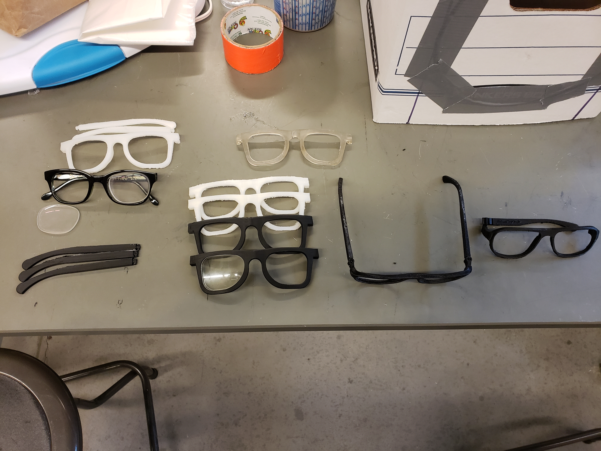
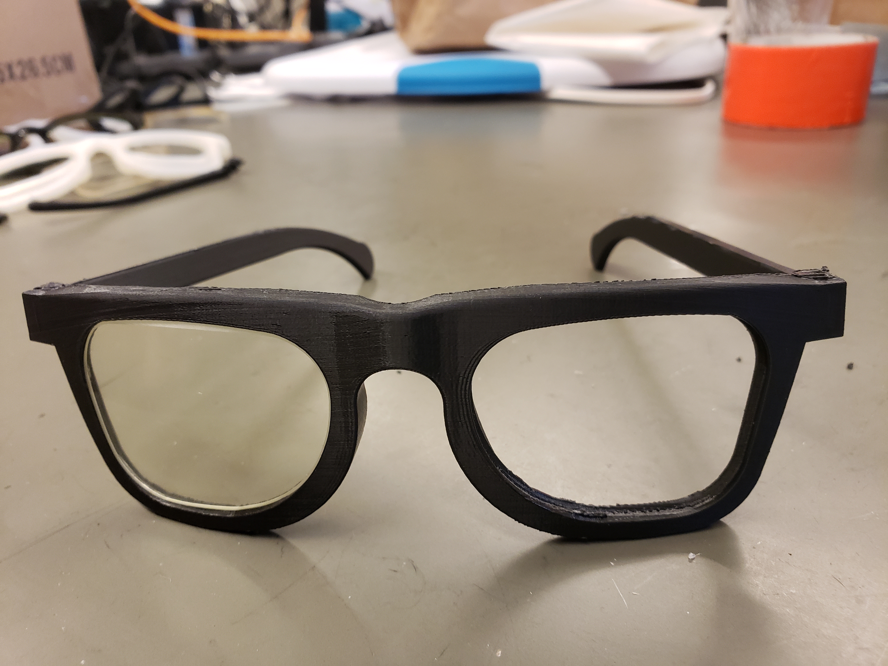
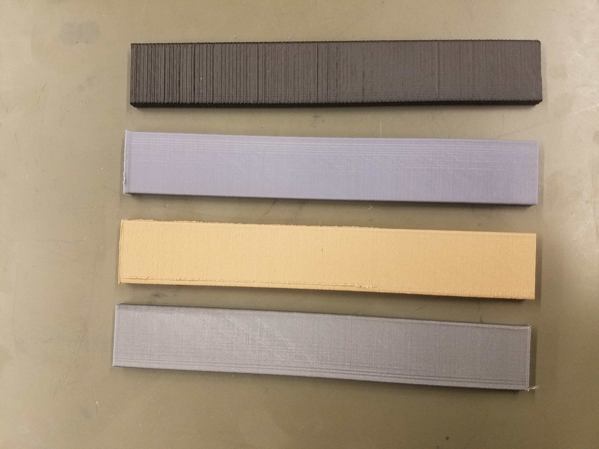
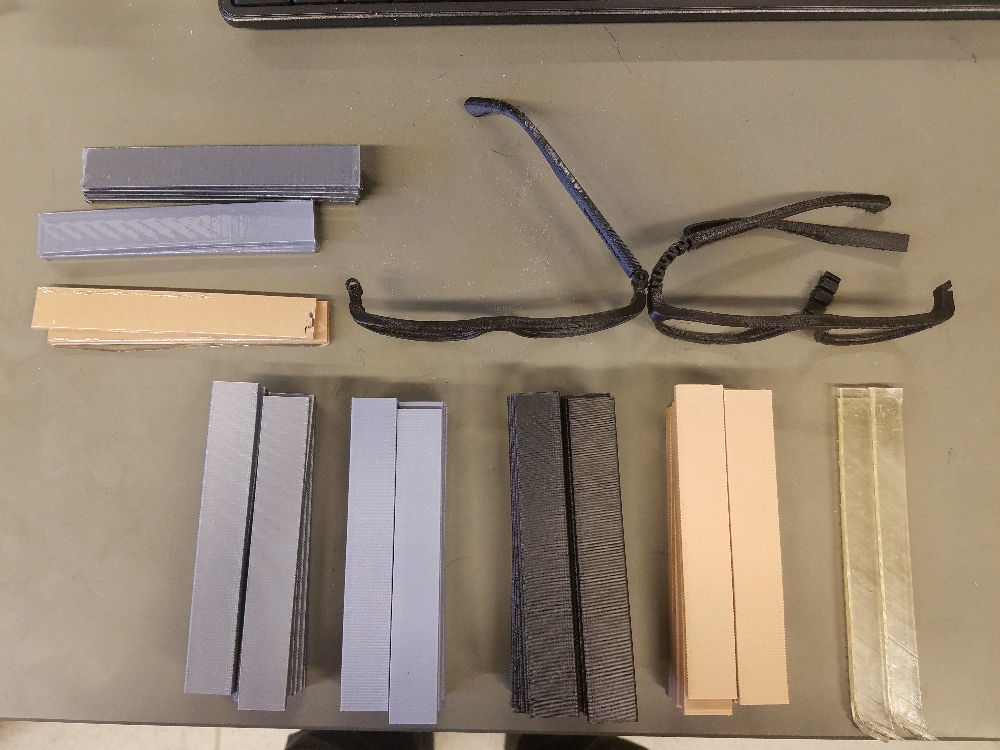
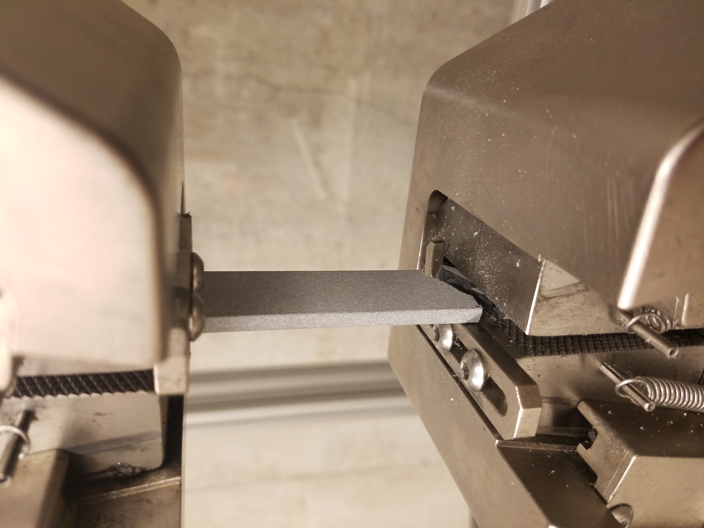
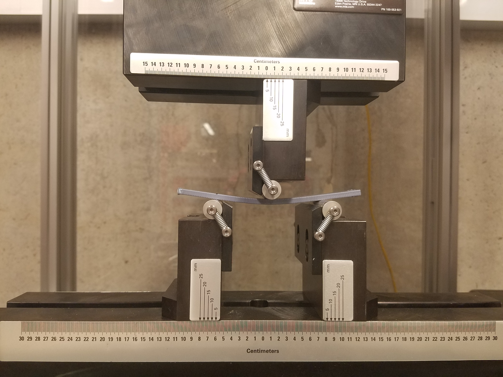

3D Printable Eyewear
Challenge
This being my capstone project, my group and I were tasked with helping a local business named “Eyes on Fremont” do conduct both the design and manufacturing of eyewear in-house. The purpose was to remove the need for long shipping times and waste of unsold products.
Solution
We turned additive manufacturing to find a solution. We conducted various mechanical tests such as bending, tensile, and hardness on various 3D printed mediums according to ASTM standards. Going above and beyond, my team and I also provided the business with minimum frame width and groove style to assist with the design process.
Result
As our roll was an advisory one, we provided Eyes on Fremont with samples of our prints, advised them to purchase a SLS 3D printer from Formlabs, suggested that they use nylon, and provided them with a basic design template.
My Contribution
At the time of the project I already had four years of constant 3D printing experience and owned three of my own 3D printers. This allowed me to take the lead and provide a lot of input into the world of additive manufacturing. I was able to communicate with the client and help come up with a list of reasonable expectations and dispel any myths about 3D printing. I was in charge of designing the test specimens according to ASTM standards, doing research into many different mediums and printing types, and 3D printing our test specimens.
This being my capstone project, my group and I were tasked with helping a local business named “Eyes on Fremont” do conduct both the design and manufacturing of eyewear in-house. The purpose was to remove the need for long shipping times and waste of unsold products.
Solution
We turned additive manufacturing to find a solution. We conducted various mechanical tests such as bending, tensile, and hardness on various 3D printed mediums according to ASTM standards. Going above and beyond, my team and I also provided the business with minimum frame width and groove style to assist with the design process.
Result
As our roll was an advisory one, we provided Eyes on Fremont with samples of our prints, advised them to purchase a SLS 3D printer from Formlabs, suggested that they use nylon, and provided them with a basic design template.
My Contribution
At the time of the project I already had four years of constant 3D printing experience and owned three of my own 3D printers. This allowed me to take the lead and provide a lot of input into the world of additive manufacturing. I was able to communicate with the client and help come up with a list of reasonable expectations and dispel any myths about 3D printing. I was in charge of designing the test specimens according to ASTM standards, doing research into many different mediums and printing types, and 3D printing our test specimens.






